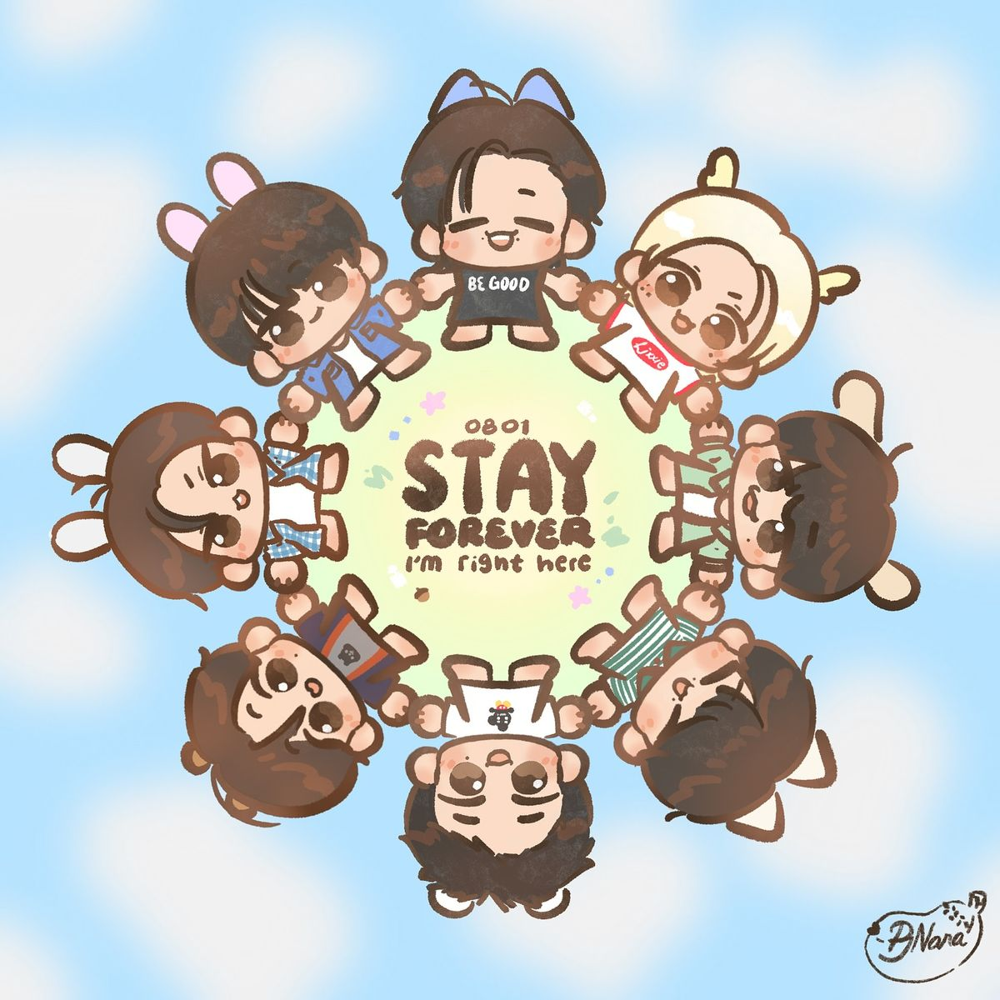
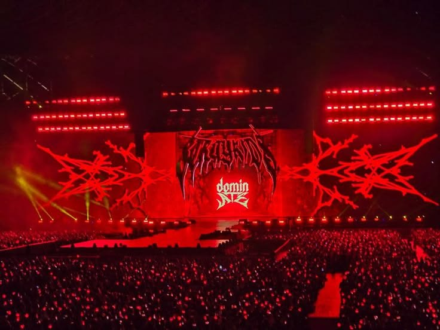

¿QUIÉNES SON LOS STAY?
STAY es el nombre oficial del fandom de Stray Kids.
El nombre fue elegido porque conecta perfectamente con el nombre del grupo:
si los Stray Kids son "niños perdidos", los STAY son quienes los hacen quedarse.
La relación entre Stray Kids y sus fans es extraordinariamente cercana.
Los integrantes frecuentemente se refieren a los STAY como su
familia, su fuerza y su razón para seguir adelante.
El grupo y el fandom se necesitan mutuamente, algo que queda grabado en la frase más icónica:
"You make Stray Kids stay."
"Stray Kids everywhere all around the world."
|

STAY: el fandom de Stray Kids
|
|
SÍMBOLOS DEL FANDOM
EL LIGHTSTICK
El lightstick oficial de Stray Kids tiene la forma de una brújula rota,
el símbolo más emblemático del grupo.
Se llama "SKZ Compass" y brilla de colores que cambian
durante los conciertos para crear impresionantes efectos visuales masivos.
EL COLOR OFICIAL
El color oficial de Stray Kids es el YELLOW (amarillo dorado),
a veces combinado con negro. Este color representa la energía del grupo
y es el que domina en sus fanchants y merchandise.
EL FANCANTO (FANCHANT)
Los STAY son conocidos por sus fanchants precisos y poderosos.
En los conciertos, el fanchant de los STAY es uno de los más fuertes
y sincronizados del K-pop, creando una energía única entre el grupo y el público.
|
CHAN'S ROOM
"Chan's Room" es el livestream semanal que Bang Chan realiza para los STAY.
En estos streams, Chan habla con sus fans, comparte música, responde preguntas
y crea un ambiente íntimo que fortalece la conexión entre el grupo y el fandom.
SKZ TALKER
Los STAY se comunican con Stray Kids a través de plataformas como
Weverse y bubble,
donde los integrantes publican mensajes directamente para sus fans.
Esta cercanía digital es parte fundamental de la cultura STAY.
EL GRITO DE GUERRA
El grito de guerra oficial de Stray Kids es:
"SKZ! SKZ! Stray Kids!"
|
|
LA CONEXIÓN STAY-SKZ
|
Lo que hace especial la relación entre Stray Kids y sus fans
|
Stray Kids escribe canciones directamente para y sobre los STAY.
Muchas de sus letras hablan sobre la gratitud hacia sus fans,
la fortaleza que les dan y la promesa de siempre regresar a ellos.
La canción "STAY" del álbum GO LIVE es un ejemplo perfecto:
una carta de amor del grupo a sus fans, prometiendo que siempre estarán ahí.
Los integrantes han dicho públicamente que los STAY son su
"undécimo miembro",
reconociendo el papel fundamental del fandom en el éxito del grupo.
|

Concierto: el momento donde STAY y SKZ se encuentran
|
|
CÓMO SER STAY
ESCUCHA
Descubre la música de Stray Kids desde el principio.
Comienza con "District 9", "God's Menu"
y "MIROH" para sentir la esencia SKZ.
|
|
EXPLORA
Ve los videoclips en orden cronológico para entender el lore.
Cada MV tiene detalles escondidos que los STAY descubren juntos.
|
|
CONECTA
Únete a la comunidad STAY en redes sociales.
Los fans de todo el mundo comparten teorías, arte y amor por el grupo cada día.
|
|
|
"Ser STAY no es solo ser fan de un grupo.
Es formar parte de una familia que se extiende por todo el mundo."
← Volver al inicio
|